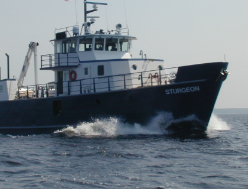

• Exploring Great Lakes Food Webs: Implications for Fish Production
Template #74

The Great Lakes have been under persistent attack from numerous environmental threats for over two centuries. Over 180 invasive species now make their homes in the Great Lakes, many of which thrive at the expense of native species. Additionally, changing nutrient dynamics, such as continued success at controlling total phosphorus inputs in Lake Huron, and newly emerging increases in soluble phosphorus inputs in western Lake Erie, are becoming increasingly important. Effects of these and other environmental threats have often been severe for native Great Lakes fish, and present major challenges to Great Lakes restoration. One of the greatest impediments to understanding how environmental threats affect Great Lakes fish is drawing clear connections between the threats and fish species. Considering this, scientists need to study entire food webs, not just individual species.
The first objective of this project is to sample the food webs of all five Great Lakes at multiple locations within each lake and at multiple time periods within the growing season. Scientists are studying food web interactions within all five Great Lakes. In each year of this study (2010-2014), a different Great Lake is intensively sampled following the schedule of U.S. EPA’s and Environment Canada’s Coordinated Science and Monitoring Initiative as follows: Lake Michigan (2010), Lake Superior (2011), Lake Huron (2012), Lake Ontario (2013), and Lake Erie (2014). For each of the lakes, species are being collected along nearshore-to-offshore transects monthly from April through October. Specimens are taken to the lab where they are identified and counted, gut contents are examined, and chemical analyses are completed.
The second objective of this project is to develop decision support tools that can be used to explore how multiple environmental threats affect food web structure and native fish restoration in the Great Lakes, particularly Lake Michigan where no tool has been developed. Scientists are creating a food web “roadmap” for each Great Lake that details the feeding linkages between species. These maps are decision support tools that allow scientists to explore how impacts of environmental threats spread through each lake’s ecosystem via connections between species. Scientists are currently using the Lake Michigan map to study how native predators such as lake trout and prey fishes such as bloaters are affected by invasions of species lower in the food web, such as zebra mussels, quagga mussels, spiny water fleas, and round gobies. This tool can also be used to explore how different scenarios affect native fish and other species. Simulation results can then be used to support management decisions to restore native fish.
The USGS is leading the way to understand how multiple environmental threats impact Great Lakes restoration by surveying the health of all five Great Lakes food webs. With GLRI funding, scientists are collecting species throughout the food web, from top predator fishes to bottom-dwelling invertebrates, to microscopic animals (zooplankton) and plants. This study marks the largest effort ever to characterize Great Lakes food webs at broad geographic and seasonal scales, providing valuable information to restore native fish and foster the health of existing fisheries. Knowledge generated through this project is critical to deciphering how environmental threats, such as invasive species and changes in nutrient input, ripple through food webs to ultimately impact native fish production and restoration. This project is generating a geographically and seasonally extensive database of Great Lakes species and feeding relationships for all of the lakes. This information allows scientists to assess the current health of the Great Lakes, and also provides a valuable baseline from which future ecosystem changes can be monitored. The food web map developed for Lake Michigan is a powerful decision support tool that allows scientists to explore how environmental threats impact native fish and other species. Through use of this tool, managers are able to make informed decisions that ultimately benefit Great Lakes restoration.
Through this GLRI-funded project, extensive sampling of the Lake Michigan (2010), Lake Superior (2011), and Lake Huron (2012) food webs has already been completed. This work has allowed scientists to gain in-depth knowledge of the diets of top predators, such as salmon and lake trout, and a stronger understanding of the geographic and seasonal dynamics of numerous other Great Lakes prey fish and invertebrate species. Scientists studying Lake Michigan have learned that a greater proportion of the Chinook salmon diet now consists of alewife (an invasive prey fish) than the diet of Chinook salmon survey in the 1990s, a finding which is important for determining salmon stocking targets in the changing Lake Michigan ecosystem. Scientists studying Lake Superior have determined that the food web and water quality are currently in good condition. Scientists documented a diverse fish community living throughout the lake, even in many of the deepest areas. In Lake Huron, scientists observed abundant naturally-reproduced lake trout, consistent with recovery of this keystone native predator being well underway. Scientists also revealed that the spiny water flea occupies greater depths in Lake Huron than was formerly known, which demonstrated a previously unrecognized potential for this invasive species to interact with native deepwater fish and zooplankton. Further analysis of samples collected from Lakes Michigan, Superior, and Huron is in progress, which will yield even greater insights into the functioning of these vast and diverse ecosystems. Intensive field sampling is underway in Lake Ontario (2013) and being planned for Lake Erie (2014). Together, these studies are providing numerous insights into the structure and function of Great Lakes food webs that should substantially enhance our ability to understand how purposeful and unexpected changes impact restoration in these valuable ecosystems.
David Bunnell, dbunnell@usgs.gov 734-214-9324